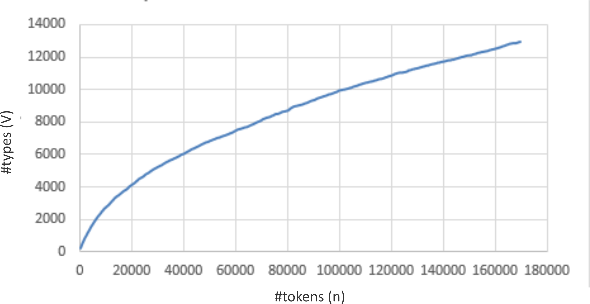

Introduction
As we gather larger copora (more instances of tokens), the corresponding number of distinct types gets diminished as we exhaust the discovery of full vocabulary. This phenomenon can be explained by the Heap's law which is formulated as:
where V = types
n = tokens
K and β are free parameters determined empirically

V = f(n) = Knβ
where V = types
n = tokens
K and β are free parameters determined empirically

Theory
Heaps' Law
The relation between types and tokens can be explained by the Heaps' law (also called Herdan's law) which describes the number of distinct words in a document (types) as a function of the document length(tokens). It can be formulated as:
V = f(n) = Knβ
where V = types
n = tokens
K and β are free parameters determined empirically
The values of the parameters depend on the language and with English text corpora, typically K is between 10 and 100, and β is between 0.4 and 0.6.
Applying logarithmics to both sides of the equation, we get:
logV = logK +βlogn
which is an equation of a straight line with intercept logK and slope β. Heap's Law implies that as we gather larger copora (more instances of tokens), the number of distinct types returned gets diminished as we exhaust the discovery of full vocabulary.

Objective
The objective of this experiment is to understand the relation between types and tokens with increasing corpus size.

Experiment

Procedure
STEP1: Select the Language which you know better
STEP2: Select the size of corpus
OUTPUT: Observe the graphs to know heap's law better
STEP2: Select the size of corpus
OUTPUT: Observe the graphs to know heap's law better